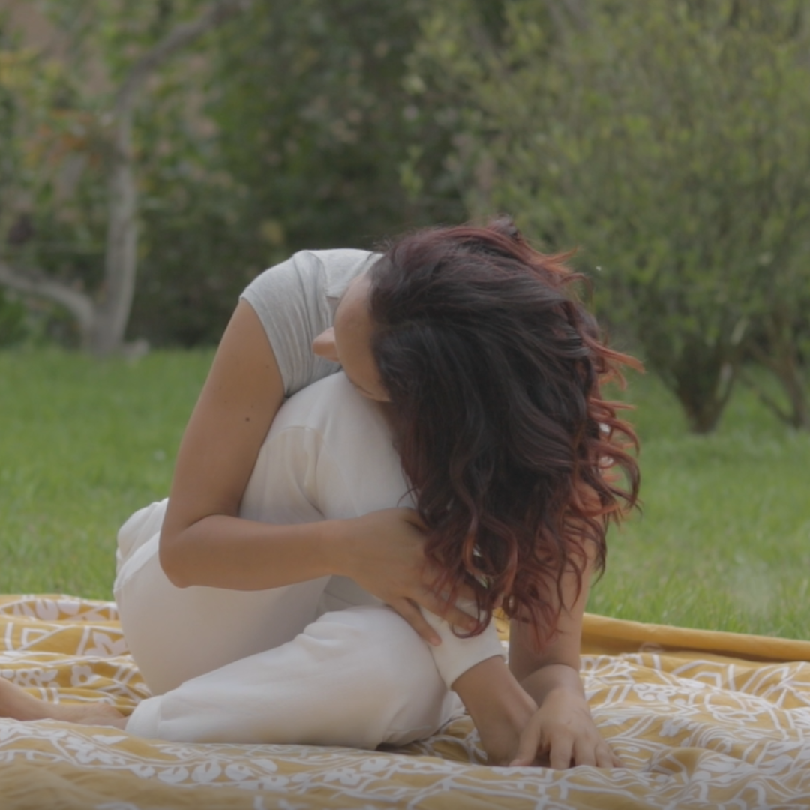
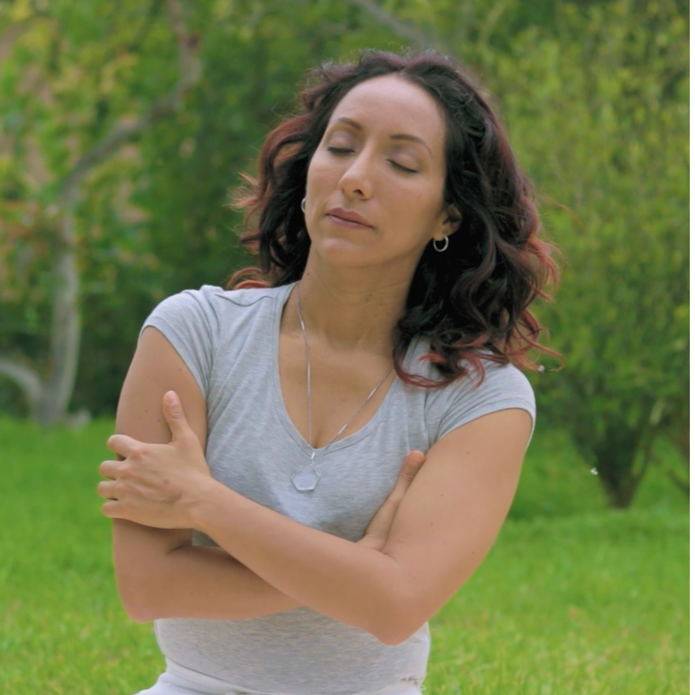
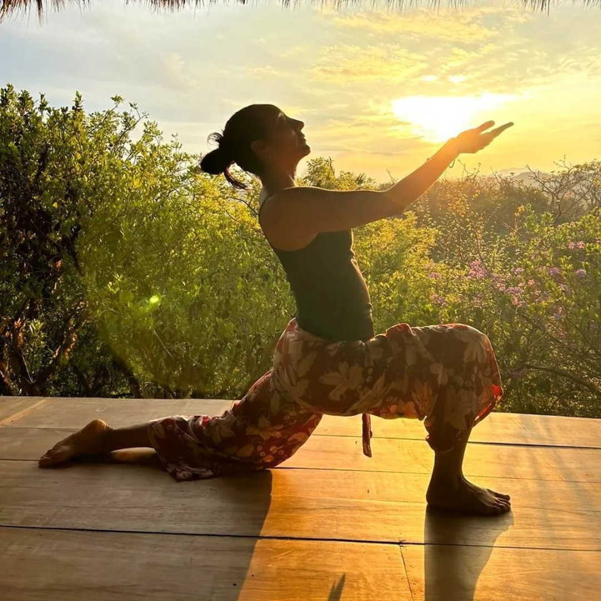

Mi historia
Mi primer acercamiento a la práctica de meditación ocurrió cuando tenía diecisiete años. Un psicólogo, a quien agradezco profundamente, me enseñó a respirar y meditar para reducir la ansiedad mientras me preparaba para postular a la universidad. Gracias a esa práctica, pude superar exitosamente esa etapa. Mi interés por el camino espiritual creció aún más cuando un tío muy querido me inscribió en las lecciones de Kriya Yoga de Paramahansa Yogananda. Fue ahí cuando mi conexión con el yoga y la meditación se profundizó.
A lo largo de los años, me sumergí en diferentes estilos de
yoga, sanación energética y meditación. Estos espacios
siempre me hicieron sentir como pez en el agua. Sin embargo, con el tiempo, me di cuenta de que, cuando el camino espiritual se convierte en un escudo para cubrir heridas no sanadas, o cuando surge desde el miedo o el vacío interno, podemos caer fácilmente en dinámicas de poder y dependencia, idealización, bypass espiritual, o en la creencia de tener una misión especial como una forma de escapar del trabajo interno profundo.

En mi búsqueda de sanar mis heridas emocionales, comencé a explorar diversas herramientas de coaching y desarrollo personal. Aunque fueron muy enriquecedoras, no resultaron ser las adecuadas para mi proceso ni para mi alta sensibilidad. Las intensas dinámicas me llevaban rápidamente a catarsis emocionales que terminaron por desregular todo mi sistema.
Fue entonces cuando decidí profundizar en el estudio del sistema nervioso y el trauma. Comprender cómo funciona mi biología fue un avance crucial en mi proceso. Al entender mis reacciones automáticas, pude soltar la autoexigencia y tratarme con más compasión. Al principio, este camino fue solitario, pero poco a poco me di cuenta de que cada síntoma y cada sensación que experimentaba tenía un nombre, y que todo lo que sentía era normal. Eso me permitió liberar la culpa y la vergüenza que me acompañaban desde hacía tanto tiempo. , guiados por un lenguaje compasivo.

En mi búsqueda de sanar mis heridas emocionales, comencé a explorar diversas herramientas de coaching y desarrollo personal. Aunque fueron muy enriquecedoras, no resultaron ser las adecuadas para mi proceso ni para mi alta sensibilidad. Las intensas dinámicas me llevaban rápidamente a catarsis emocionales que terminaron por desregular todo mi sistema.

Este recorrido fue tan transformador que decidí formarme en yoga informado en trauma y acercamiento somático, y especializarme en cadenas musculares y emociones. Para acompañarte desde un espacio que respeta tu experiencia, con movimientos amables y adecuados a tu tipo de postura y biomecánica, integrando prácticas de meditación desde una espiritualidad más humana y consciente.
Entiendo que cada ser humano es complejo y único. Si sientes que mi camino resuena contigo, sera un honor acompañarte en tu viaje al bienestar, conectando con la sabiduria de tu cuerpo, en un espacio sensible y compasivo.
Un poco mas sobre mí
Formación Profesional
– Ing. Agroindustrial graduada de la Universidad Nacional de Trujillo
Yoga y meditación
– Curso de Yoga y Gimnasia Psicofísica – Gran Fraternidad Universal
– Lecciones e Iniciación en Kriya Yoga – Maestro Paramahansa Yogananda
– Profesorado de Ashtanga Yoga Terapéutico – Escuela Taitokiu y Medicina Oriental
– Profesorado de Vinyasa Yoga RYT – Escuela Vinyasa Yoga Flow, avalado por Yoga Alliance
– Profesorado de Yoga RYT – Asociación Internacional de Yoga Yoguismo, avalado por Yoga Alliance
Yoga para niños y familias
– Profesorado de Yoga de Radiant Child Yoga – Shakta Kaur Khalsa
– Profesorado de Yoga para Niños y Familias – Rainbow Kids Yoga
– Certificación en Técnicas de Yoga y Relajación para Niños – Goodtoday Yoga
Sanación energetica y bienestar
– Certificación en Nutrición Consciente y Alimentación Viva – Escuela Tree of Life, Gabriel Cousens
– Pranic Healing Básico, Avanzado, Psicoterapia, Cristales, Arhatic Yoga Preparación, Arhatic Yoga Nivel uno y dos del Maestro Master Choa Kok Sui.
– Thetahealing Básico y Avanzado
Programa y especialidades
– Especializacion en Cadenas Musculares y emociones – Fisiom, yoga, fisioterapia y osteopatia
– Facilitadora de Respiración Ovárica y Alquimia Femenina – Sajeeva Hurtado
Trauma y educación somática
– Yoga Sensible al Trauma y Acercamiento Somático – Belu Wellbeing
– Cursos en Educación Somática, Trauma y Embodiment – Academia de Coaching Somático y Escuela de Ashley Meeder
– Programa Online “Descenso en tu Cuerpo” – Mujer Alquimia, Lorena Cuendias
– Programa Introductorio de Formación en T.R.E. (Ejercicios de Liberación de Estrés y Trauma) – T.R.E. Iberoamericano
Practicas de autoconocmiento y expresión corporal
– Cursos y Talleres de Autoconocimiento, Coaching y Liberación Corporal – Eneagrama y Cuerpo Vivo, Ritmos, Danza Primal, Grace Coaching, Breathwork
– Taller de Profundizacion de Power Yoga y Meditación en Retiro – Gaby Zemeño